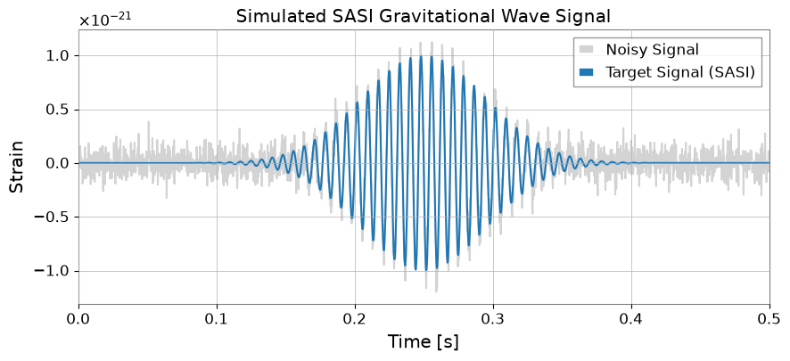
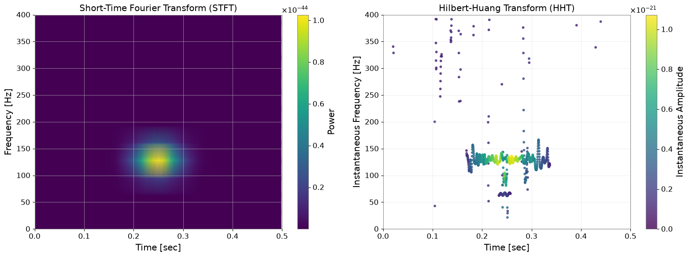
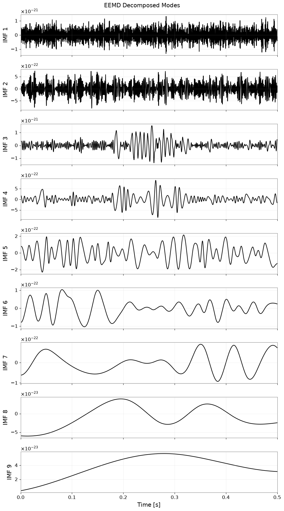
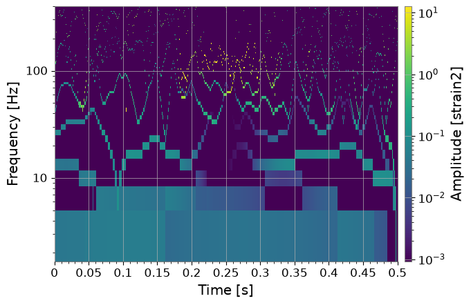

Note
このページは Jupyter Notebook から生成されました。 ノートブックをダウンロード (.ipynb)
[1]:
# Skipped in CI: Colab/bootstrap dependency install cell.
HHT: 解析

このチュートリアルでは gwexpy を用いた ヒルベルト–黄変換（HHT）解析 のワークフローを解説します。 HHT は非線形・非定常な信号に強く、STFT やウェーブレットでは捉えにくい瞬時周波数の変化を可視化できます。
HHT は次の2ステップで構成されます:
Empirical Mode Decomposition (EMD/EEMD): 信号を IMF と残差に分解
Hilbert Spectral Analysis: 各 IMF の瞬時振幅・瞬時周波数を算出
注意: 本チュートリアルには PyEMD (EMD-signal) が必要です。
pip install EMD-signal
注記: この日本語版は、英語版の理論比較をそのまま翻訳したものではなく、
TimeSeries.hht()を中心にした実践ワークフロー重視の版です。
[2]:
import astropy.units as u
import matplotlib.pyplot as plt
import numpy as np
from gwexpy.timeseries import TimeSeries
# Check PyEMD installation
try:
import PyEMD
print("PyEMD is installed and ready.")
except ImportError:
raise ImportError(
"This tutorial requires 'PyEMD' (EMD-signal). Please run: pip install EMD-signal"
)
PyEMD is installed and ready.
1. HHTの理論的背景と利点
HHT（ヒルベルト–黄変換）とは？
HHT は非線形・非定常な信号データを解析するための強力な手法です。 主に2つのプロセスで構成されます:
EMD（経験的モード分解）: 元の信号を、それぞれ異なる周波数スケールを持つ固有モード関数（IMF）の和に分解します。
HSA（ヒルベルトスペクトル解析）: 各 IMF にヒルベルト変換を適用し、瞬時周波数と瞬時振幅を算出します。
従来の STFT との違い
短時間フーリエ変換（STFT）やウェーブレット変換では、時間分解能と周波数分解能の間にトレードオフ（不確定性原理による制限）があります。 一方、HHT は局所的な時間スケールに基づいて適応的に基底関数を生成するため、この制限を受けず、高い時間・周波数分解能を同時に実現できます。
EEMD（アンサンブル EMD）
標準的な EMD では、断続的な信号やノイズにより、1つの IMF に異なる周波数成分が混在する「モード混合」が生じることがあります。 これを解決するため、EEMD（Ensemble EMD） が提案されています。
元の信号に白色ノイズを加えた複数のアンサンブルメンバーを生成する
各信号に EMD を実行する
得られた IMF のアンサンブル平均を取り、ノイズをキャンセルして物理的に意味のあるモードを安定して抽出する
物理的意図: CCSN 由来の信号では、固定窓が作る見かけの筋ではなく、SASI や原始中性子星振動のような実在するモード族を追跡できるかが重要です。
2. シミュレーション：SASIモードの再現
重力崩壊型超新星（CCSN）の重力波解析において、SASI（定在降着衝撃不安定性） と呼ばれる不安定性は重要な観測対象です。 ここでは、SASIからの重力波を模した サイン・ガウシアン 信号を生成して解析します（参考文献: Takeda et al. 2021）。
サイン・ガウシアン信号は以下の式で表されます:
[3]:
import warnings
warnings.filterwarnings("ignore", category=UserWarning)
warnings.filterwarnings("ignore", category=DeprecationWarning)
import numpy as np
import matplotlib.pyplot as plt
from gwexpy.timeseries import TimeSeries
def sine_gaussian(t, t0, t_width, f0, amp=1.0):
exponent = -(((2 * np.pi * (t - t0)) / t_width) ** 2)
return amp * np.exp(exponent) * np.sin(2 * np.pi * f0 * t)
# Parameter settings (mimicking SASI mode)
duration = 0.5 # seconds
fs = 4096 # sampling rate
t = np.linspace(0, duration, int(duration * fs))
# Generate signal
t0 = 0.25 # peak time
t_width = 0.4 # width
f0 = 130.0 # frequency (Hz)
clean_signal = sine_gaussian(t, t0, t_width, f0, amp=1e-21)
# Add noise
np.random.seed(42)
noise_amp = 0.1e-21
noise = np.random.normal(0, noise_amp, len(t))
data = clean_signal + noise
# Create TimeSeries object
ts_data = TimeSeries(
data, t0=0, sample_rate=fs, name="Simulated SASI Signal", unit="strain"
)
# Plot
fig, ax = plt.subplots(figsize=(10, 4))
ax.plot(t, ts_data.value, label="Noisy Signal", color="lightgray")
ax.plot(t, clean_signal, label="Target Signal (SASI)", color="tab:blue")
ax.set_xlabel("Time [s]")
ax.set_ylabel("Strain")
ax.set_xlim(0, duration)
ax.legend()
plt.title("Simulated SASI Gravitational Wave Signal")
plt.show()

3. 比較分析：STFT vs HHT
同じ信号に STFT（スペクトログラム）と HHT（ヒルベルトスペクトル）を適用し、分解能の違いを比較します。
注意: 以下の結果では、STFT の方がノイズに対してロバストに見え、信号がよりクリアに見える場合があります。 これは、標準的な EMD がノイズの影響を受けやすく「モード混合」を起こすためです。 この問題は、次のセクションで紹介する EEMD を使用することで大幅に改善されますが、まずは HHT の基本的な動作を確認しましょう。
よくある誤り: HHT の鋭い ridge をすべて物理モードだと読むこと。padding、分解法、IMF 数を少し変えただけで筋が崩れるなら、それは堅牢な信号特徴ではなく分解アーティファクトである可能性が高いです。
[4]:
# --- 1. STFT (Spectrogram) using gwexpy API ---
# Convert sample counts to time-based parameters for gwexpy API:
# nperseg=128 samples → fftlength = 128/fs seconds
# noverlap=120 samples → overlap = 120/fs seconds
# spectrogram2 computes an STFT-like spectrogram (no stride needed)
spec = ts_data.spectrogram2(fftlength=128/fs, overlap=120/fs)
f_stft = spec.frequencies.value
t_stft = spec.times.value
Sxx = spec.value
# --- 2. HHT (EMD + Hilbert) ---
# Important: EMD has numerical tolerance, so it may not decompose well for very small amplitudes (e.g., 1e-21 for GW).
# Therefore, we normalize the data first, then scale back the results.
data_std = np.std(ts_data.value)
ts_norm = TimeSeries(
ts_data.value / data_std,
t0=ts_data.t0,
sample_rate=ts_data.sample_rate,
name="Normalized SASI Signal",
unit=ts_data.unit,
)
hht_result = ts_norm.hht(
emd_method="emd",
emd_kwargs={
"sift_max_iter": 200,
"stopping_criterion": 0.2,
},
hilbert_kwargs={
"pad": 200,
"if_smooth": 11,
},
output="dict",
)
imfs = hht_result["imfs"]
if_dict = hht_result["if"]
ia_dict = hht_result["ia"]
n_imfs = len(imfs)
print(f"Extracted {n_imfs} IMFs from normalized data.")
# --- Plot ---
fig, (ax1, ax2) = plt.subplots(1, 2, figsize=(16, 6))
# STFT
mesh = ax1.pcolormesh(t_stft, f_stft, Sxx.T, shading="gouraud", cmap="viridis")
ax1.set_ylabel("Frequency [Hz]")
ax1.set_xlabel("Time [sec]")
ax1.set_title("Short-Time Fourier Transform (STFT)")
ax1.set_ylim(0, 400)
ax1.set_xlim(0, duration)
plt.colorbar(mappable=mesh, ax=ax1, label="Power")
# HHT Plot
# Filter out low-amplitude points (noise) for visibility
amp_list = [np.max(ia_dict[key].value) for key in imfs.keys()]
max_amp = (np.max(amp_list) * data_std) if amp_list else 1.0
threshold = max_amp * 0.1 # Display only points above 10% of max amplitude
sc = None
for key in imfs.keys():
t_vals = if_dict[key].times.value
inst_freq = if_dict[key].value
inst_amp = ia_dict[key].value * data_std
mask = inst_amp > threshold
if np.any(mask):
sc = ax2.scatter(
t_vals[mask],
inst_freq[mask],
c=inst_amp[mask],
cmap="viridis",
s=10,
alpha=0.8,
vmin=0,
vmax=max_amp,
)
ax2.set_ylabel("Instantaneous Frequency [Hz]")
ax2.set_xlabel("Time [sec]")
ax2.set_title("Hilbert-Huang Transform (HHT)")
ax2.set_ylim(0, 400)
ax2.set_xlim(0, duration)
ax2.grid(alpha=0.3)
if sc is not None:
cbar = plt.colorbar(mappable=sc, ax=ax2)
cbar.set_label("Instantaneous Amplitude")
plt.tight_layout()
plt.show()
Extracted 8 IMFs from normalized data.

4. 応用：EEMDによるモード抽出とパラメータ推定
EEMDの適用
上記の単純な EMD の結果では、ノイズの影響により周波数が振動したり、本来の 130Hz 信号が複数の IMF に分割される（モード混合）ことがあります。 EEMD（Ensemble EMD） を使用することでこれを改善できます。
Sasaoka et al. (2024) では、CCSN からの重力波解析において EEMD（または CEEMD）を使用することで、原始中性子星（PNS）の振動モードを正確に抽出し、PNS の物理量（質量対半径の比 \(M/R^2\)）を周波数変化から推定できることが示されました。
以下のコードは、gwexpy の TimeSeries.hht() を使用して EEMD を実行する例です。
注意したい失敗モード:
eemd_trialsを増やすと IMF は安定しやすくなりますが、不適切な帯域選択や広帯域トランジェント優勢のデータまで自動で救ってくれるわけではありません。狙う物理が狭帯域でゆっくり動くモードなら、まず妥当な時間帯・周波数帯に切り出してください。
[5]:
# Run EEMD (gwexpy API)
print("Running EEMD on normalized data via TimeSeries.hht()...")
eemd_result = ts_norm.hht(
emd_method="eemd",
emd_kwargs={
"eemd_trials": 10,
"eemd_noise_std": 0.2,
"random_state": 42,
"sift_max_iter": 200,
"stopping_criterion": 0.2,
},
hilbert_kwargs={
"pad": 200,
"if_smooth": 11,
},
output="dict",
)
eimfs = eemd_result["imfs"]
n_eimfs = len(eimfs)
print(f"EEMD completed. Extracted {n_eimfs} IMFs.")
# Visualize all IMFs
fig, axes = plt.subplots(n_eimfs, 1, figsize=(10, 2 * n_eimfs), sharex=True)
if n_eimfs == 1:
axes = [axes]
for i, key in enumerate(eimfs.keys()):
imf_ts = eimfs[key]
axes[i].plot(imf_ts.times.value, imf_ts.value * data_std, "k")
axes[i].set_ylabel(f"IMF {i + 1}")
axes[i].grid(alpha=0.3)
if i == n_eimfs - 1:
axes[i].set_xlabel("Time [s]")
axes[i].set_xlim(0, duration)
plt.suptitle("EEMD Decomposed Modes")
plt.tight_layout()
plt.show()
Running EEMD on normalized data via TimeSeries.hht()...
EEMD completed. Extracted 9 IMFs.

5. ヒルベルトスペクトル (HHTSpectrogram)
output='spectrogram' を指定すると時間-周波数マップを得られます。HHTSpectrogram.plot() は既定で対数スケールです。
[6]:
spec = ts_norm.hht(
output="spectrogram",
emd_method="eemd",
emd_kwargs={
"eemd_trials": 10,
"eemd_noise_std": 0.2,
"random_state": 42,
"sift_max_iter": 200,
"stopping_criterion": 0.2,
},
hilbert_kwargs={
"pad": 200,
"if_smooth": 11,
},
fmin=0,
fmax=400,
n_bins=120,
weight="ia2",
)
plot = spec.plot()
plt.ylim(0, 400)
plt.show()

6. 低レベルAPIについて（任意）
詳細制御が必要な場合は以下を直接使用できます:
emd()（分解）hilbert_analysis()（IA/IF）instantaneous_frequency()/envelope()（個別 IMF）
通常の解析では hht() が推奨です。
ヒント
端点効果が出やすいので
hilbert_kwargs={'pad': N}を検討し、端は無視してください。より滑らかな IMF が必要なら
eemd_trialsを増やします（計算時間増）。再現性重視なら
emd_method='emd'を使います。振幅が極端に小さい区間では瞬時周波数が負になったり激しく符号反転したりしやすいので、そのまま物理量として読まず低振幅領域をマスクしてください。
まとめ
TimeSeries.hht() を使うと、理論的な強力さを持つ HHT を実践的に活用できます:
SASI などの非定常重力波信号の瞬時周波数追跡（§2）
STFT との比較による分解能の優位性確認（§3）
EEMD によるモード混合の解消と物理量推定（§4）
output='spectrogram'で時間-周波数マップを取得（§5）
実運用では、狙う物理を先に切り出し、IMF や ridge が小さな解析条件変更に対して安定かを確かめ、その後ではじめて瞬時周波数をモード追跡へ解釈するのが安全です。